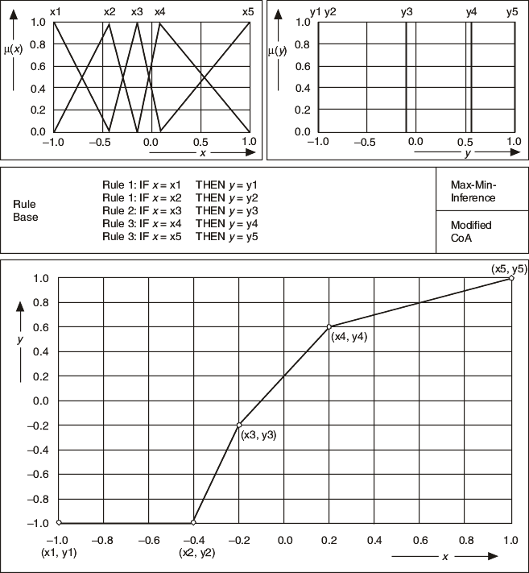

Consider the stepped linear characteristic curve shown in the following image. You can describe the four linear sections with the five circled base points (xi, yi).

To use a single-input fuzzy controller to reproduce the given characteristic, use five linguistic terms each for the input and output quantities, naming them x1, x2, ..., x5 and y1, y2, ..., y5, respectively. To obtain the stepped linear sections between the base points, you always must have exactly two available active rules. To implement this situation, entirely overlap the triangular membership functions for the input variable, giving each a typical value that corresponds to a certain base point component, xi.
To obtain characteristic sections that are exactly linear, you must model the output variable with singleton membership functions, each of which has a typical value that corresponds to a certain base point component, yi. The rule base is then a linguistic enumeration of the five base points.